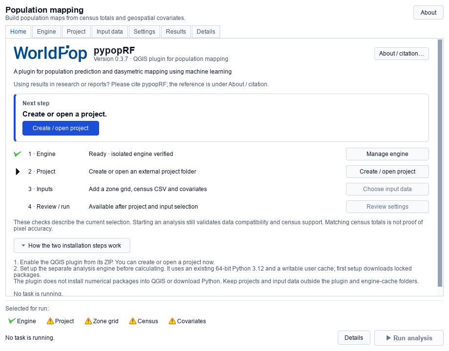
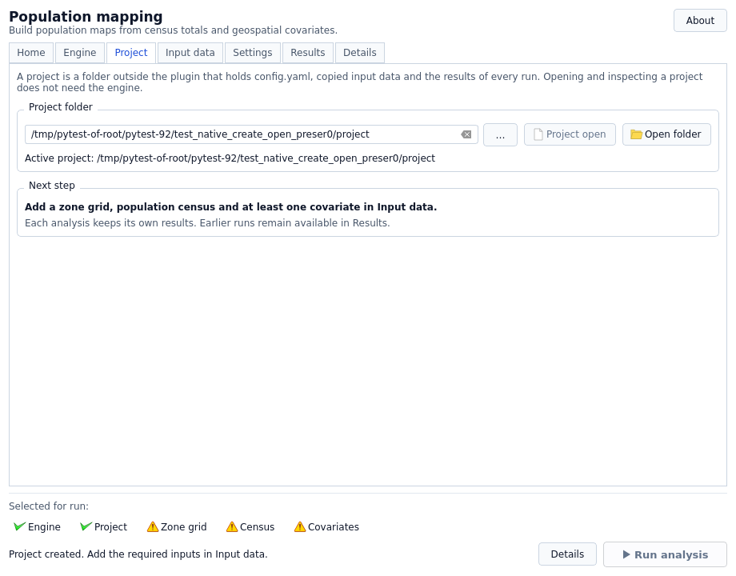
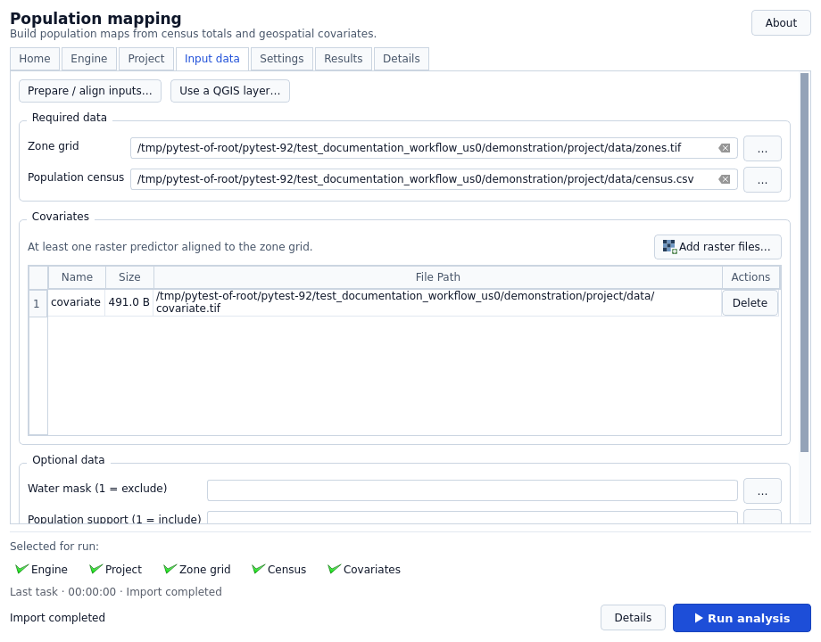
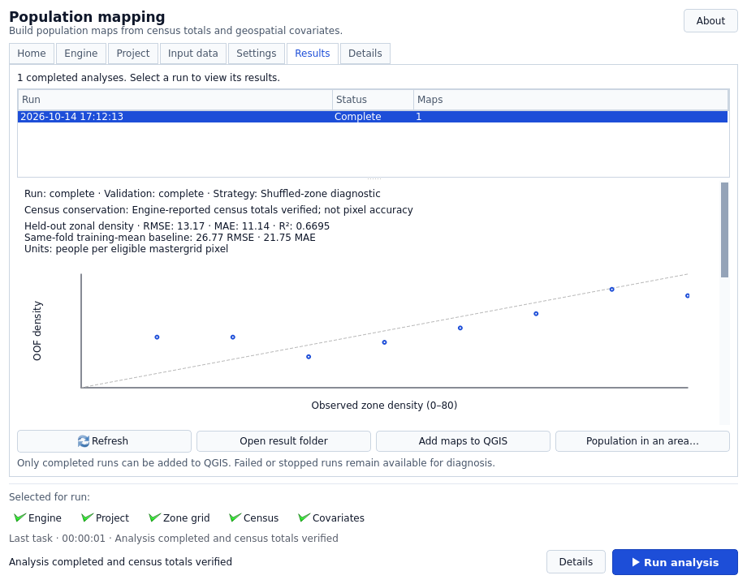

Your first population map
This guide takes you from opening pypopRF to a completed population-count map and its saved diagnostics. You supply the study data; the screenshots use small synthetic test data, not a downloadable production dataset.
For ZIP installation and supported platforms, start with Installation. For an existing analysis folder, follow the same workflow but choose Open project instead of creating a new configuration.
Before you start
For direct import, have these files ready:
| Input | What it represents |
|---|---|
| Zone grid | A single-band GeoTIFF whose valid pixels contain integer census-zone IDs. |
| Population census | A CSV with one row per zone, unique IDs and finite, nonnegative population totals. |
| At least one covariate | A single-band numeric GeoTIFF used as a predictor. |
The rasters must share CRS, dimensions and the complete pixel transform, including origin and pixel size. Matching CRS alone is not enough. Declare missing data as NoData or valid-data masks. See Input data for the complete contract and optional inputs.
Choose a writable project folder outside the installed plugin and engine/job caches. Keep a backup of the originals: run history is not a backup system. If your data need alignment or polygon rasterization, use the optional preparation route below. Direct import does not silently reproject or resample them.
1. Open Home and choose your next step
Open pypopRF from its QGIS toolbar action or Run Population Modeling menu entry. Home explains the two installation steps and shows current Engine, Project, Inputs and Review/run state.

You can create or open a project before preparing the engine. There is no mandatory startup wizard and a Home action does not automatically start analysis. About / citation… contains packaged authors and the citation for reports.
The Selected for run checklist and Run analysis remain below every tab. They describe selections, not completed scientific validation. Click a checklist item to navigate to its controls.
2. Prepare the separate engine once
Open Engine and wait for the initial background check:
- Ready to calculate: continue to Project. Routine installation controls are hidden; Manage engine (advanced) is available when needed.
- Compatible interpreter listed: select it, then choose Set up engine.
- No compatible interpreter: use Get Python 3.12… for the explicit download-page prompt, install 64-bit CPython 3.12 separately, then choose Find Python again. Advanced manual executable selection is checked before use.

Selecting Python is not installing the engine. Setup creates a private per-user environment and downloads hash-locked packages; wait until verification completes. First setup needs network access and writable cache space. The plugin does not download Python automatically.
Numerical Python/GDAL dependencies run separately from QGIS's Python. Do not install rasterio, NumPy or engine packages into QGIS to bypass an error. See Installation for the isolation and interpreter requirements. A failed repair does not replace a previously verified engine. Read its message and Details; Cancel setup requests cancellation, not successful installation.
3. Create or open the project explicitly
On Project, choose the folder, then use the action next to it:
| Folder state | Action | Result |
|---|---|---|
No config.yaml |
Create project | Adds a configuration and project storage; unrelated existing files are not overwritten or automatically selected. |
Existing config.yaml |
Open project | Validates and restores saved inputs/settings without resetting the configuration. |
| That project is already active | Project open (disabled) | Activation is complete; a second Open click is unnecessary. |

Selecting a folder only chooses a candidate. It does not create/open it. If you choose another folder, explicitly Create/Open it before importing or running. The current-project label and Project readiness item confirm activation.
Create adds config.yaml and the data directory. Activation can also create/append
the GUI log under output/; opening does not promise zero filesystem activity.
It does not erase inputs or previous runs. If an existing configuration is invalid,
keep it and its backup: do not delete it just to make Create appear. See
Projects and storage.
4. Select inputs and handle filename conflicts
On Input data:
- Select the Zone grid GeoTIFF.
- Select the Population census CSV.
- Choose Add raster files… to add covariates. Use distinct, meaningful filenames: predictor names come from the files, and informational table cells are read-only.
- Wait for each import to finish before the next action.

New files are copied into the project's configured data directory in background jobs; sources are retained. A destination filename collision offers:
- Use verified existing file, when identical bytes and compatible raster resources have been verified.
- Import separate copy, under a new portable filename without replacing the old input.
- Cancel, retaining existing files and configuration.
Do not resolve a conflict by deleting a file whose role you have not checked. A failed selection restores the configured input, not the rejected one. Cancel import requests cancellation of a current copy.
When typing an input path manually, press Enter or Tab to confirm it. A Run click with an uncommitted input confirms the import instead of starting analysis; wait for the import to succeed, then click Run again. Closing discards a draft.
New direct GeoTIFF imports must be self-contained. External .msk, .aux.xml
and world-file resources are not silently dropped: read the
raster resource rules.
Use a QGIS layer… supports underlying local raster files; unsupported remote,
memory, filtered or edited layers need an explicit suitable export first.
Optional inputs are Water mask (1 = exclude), Population support (1 = include) and Age and sex census. Their meanings differ. Omit them for a first run unless their support and schema have been checked against the input contract.
5. Map your actual CSV columns and review settings
On Settings → Census columns, enter exact, case-sensitive names:
- Zone identifier: the column matching integer IDs in the zone grid.
- Population total: zone population counts, not density.
New projects default to id and pop; the CSV does not need those names. For
headers zone_code,total_people, enter zone_code and total_people respectively.
Press Tab or leave each field to finish editing. The mapping is saved; source
columns are not renamed. An opened project's old mapping is restored, so check
it rather than replacing it with defaults.
Begin with conservative processing defaults. Workers/tiles affect resource usage; target transformation and feature selection affect the model. Read Settings before changing them. Add population maps to QGIS controls automatic addition after success.
All checklist items can now look ready. The engine still checks values, ID matching, alignment and eligible support before accepting an analysis.
Optional: prepare a separate aligned project
With the engine ready, choose Input data → Prepare / align inputs…:
- Choose a Reference raster supplying CRS, extent and resolution. Its values are not an implicit study-area mask. Choose an existing zone ID raster or census polygons to rasterize onto that grid.
- Specify CSV ID/population columns and, for polygons, the polygon ID field.
- Add predictors with explicit quantity/resampling choices. Continuous measurements, binary indicators and counts have different rules. Counts needing interpolation are refused rather than falsely conserved.
- On Review and create, choose an absolute New project directory that does not already exist. Use Check compatibility, read the summary/warnings and acknowledge Create new files; preserve the sources and current project.
- Choose Create prepared project. After successful preparation, choose Open prepared project separately to switch to it.
The current project and sources are not updated in place. Changed files/choices require another compatibility check. Add any age-sex CSV after opening the prepared project; it is not automatically migrated. Full restrictions are in Guided preparation.
6. Run and wait for a terminal result
Choose Run analysis. A separate process calculates while QGIS stays responsive. Watch the named stage and elapsed activity, not just percentage: progress is stage-based, not a remaining-time estimate. Details retains full messages when the compact footer shortens them.
Do not edit/regenerate inputs during import or analysis. If preflight fails, read the error, correct data/mapping and run again. An error is not a completed map. Use Stop to request cancellation and wait for stopping to finish. A stopped or failed attempt may leave diagnostics, but source inputs and earlier completed runs are preserved. See Running analysis.
7. Inspect the completed run, not just a colored raster
In Results, select a Complete run. Use Open result folder for artifacts or Add maps to QGIS if automatic addition was off. Maps are grouped by run; adding the same saved map again does not duplicate it. Failed/cancelled attempts are diagnostic history, not finished population products.

Population TIFF values are persons per pixel, not probabilities or people/km².
prediction.tif is an allocation-weight surface, not a population-count map.
Per-zone census conservation is checked separately from validation; matching
supplied totals does not prove the within-zone distribution is accurate.
Read the validation strategy, held-out zone-density diagnostics and limitations. Spatial validation may be unavailable with too few occupied blocks; no score is invented instead. Neither spatial nor shuffled-zone diagnostics establish fine-pixel accuracy. See Validation and scientific limits.
Population in an area… optionally sums a completed map using cell centres inside/on polygon boundaries. Read partial-coverage warnings; it is not area-weighted interpolation or automatically a total for the entire AOI.
Reopen or run another analysis
To return later, open pypopRF, select the project folder and choose Open project. Wait for the engine check and review restored paths and CSV mapping. Results → Refresh reads saved history.
For another analysis, deliberately review/change inputs or settings, then Run
again. Each accepted attempt uses a fresh <output_dir>/runs/<run_id>/ with its
effective configuration and provenance; earlier maps are not replaced. Keep whole
run folders when comparing or archiving outputs. See Projects and storage
for backup and relocation.